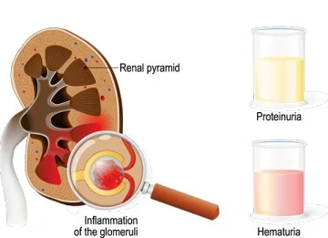
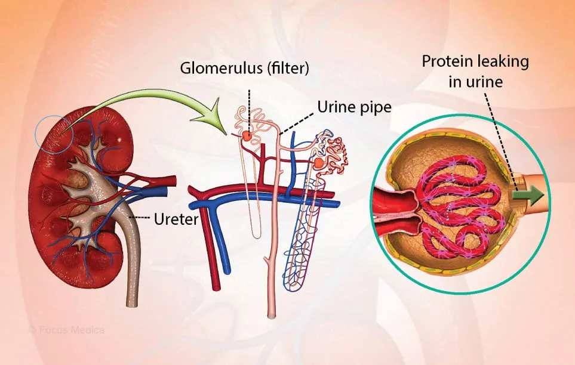
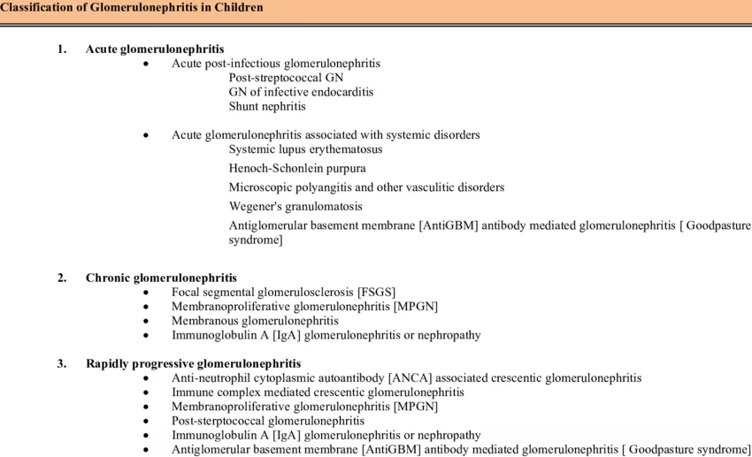
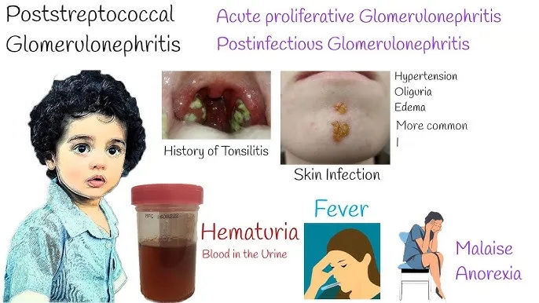
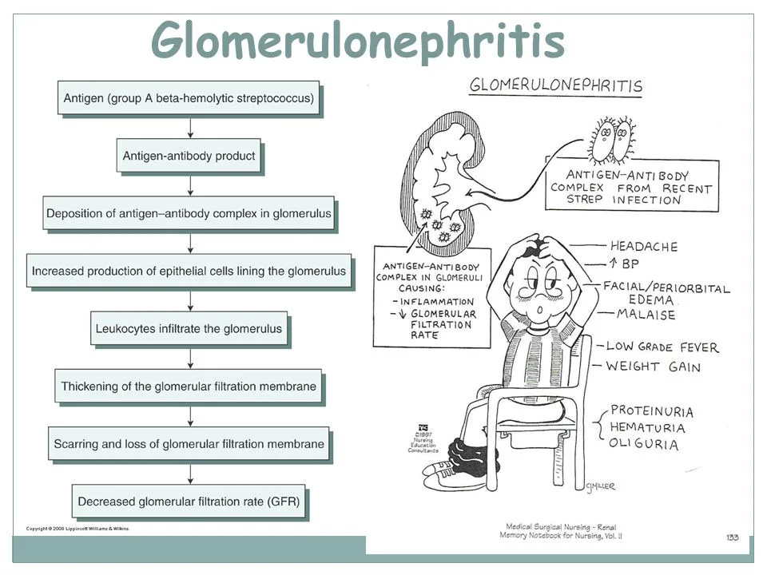

Expanded Nursing Uganda Explanation
Glomerulonephritis should be understood beyond a short definition. Link the concept to patient history, focused assessment, common risks, nursing priorities, documentation and evaluation of outcomes.
Contents, 14 sections (tap to expand)
01 Glomerulonephritis (GN)
Glomerulonephritis (GN) refers to a group of kidney diseases characterized primarily by inflammation and damage to the glomeruli , the tiny filtering units within the kidneys.
Glomerulonephritis is an inflammatory condition of the kidneys characterized by increased permeability of the glomerular filtration barrier causing filtration of RBCs and proteins .
While the primary site of injury is the glomerulus, inflammation can sometimes extend to the small blood vessels (capillaries, arterioles) within the kidney.
- Bilateral Involvement : GN usually affects both kidneys simultaneously due to the systemic nature of many underlying causes (e.g., immune responses, infections).
Review of Relevant Anatomy and Physiology: The Nephron and Glomerulus
Functional Unit : The nephron is the fundamental structural and functional unit of the kidney, responsible for filtering blood and producing urine. Each kidney contains approximately 1 million nephrons.
Nephron Structure :
- Glomerular Capsule (Bowman’s Capsule) : A cup-shaped structure at the closed end of the nephron tubule. It surrounds the glomerulus.
- Glomerulus : A network (tuft) of tiny arterial capillaries enclosed within Bowman’s capsule. This is where blood filtration begins. Blood enters via the afferent arteriole and exits via the efferent arteriole.
- Renal Tubule : Extending from Bowman’s capsule, this tubule is about 3 cm long and consists of three main parts:
- Proximal Convoluted Tubule (PCT) : Responsible for reabsorbing the majority of filtered water, electrolytes (Na+, K+, Cl-), glucose, amino acids, and bicarbonate.
- Loop of Henle : A hairpin-shaped loop (with descending and ascending limbs) extending into the medulla. Crucial for establishing the concentration gradient in the kidney, allowing for urine concentration. Further water and electrolyte reabsorption occurs here.
- Distal Convoluted Tubule (DCT) : Involved in fine-tuning electrolyte and acid-base balance (e.g., reabsorbing Na+, Ca++; secreting K+, H+). Influenced by hormones like aldosterone and ADH (indirectly).
- Collecting Duct : Several DCTs empty into a collecting duct. These ducts pass through the medulla, further adjusting water reabsorption (under ADH influence) and electrolyte balance before delivering urine to the renal pelvis.
Glomerular Filtration Membrane (GFM) : The crucial barrier separating blood in the glomerular capillaries from the filtrate in Bowman’s space. It consists of three layers:
- Endothelium : The inner lining of the capillaries, featuring fenestrations (pores) that allow passage of water and small solutes but block blood cells.
- Glomerular Basement Membrane (GBM) : A middle layer, acting as a key size-selective and charge-selective barrier, preventing larger proteins (like albumin) from passing through.
- Epithelial Cells (Podocytes) : The outer layer facing Bowman’s space. These cells have foot processes (pedicels) separated by filtration slits, covered by a slit diaphragm, providing a final barrier, particularly to medium-sized proteins.
Glomerular Filtration Rate (GFR) : The volume of fluid filtered from the glomerular capillaries into Bowman’s capsule per unit of time.
- Normal GFR : Approximately 125 mL/minute or 180 Liters/day .
- Filtration Process: Water and small molecules (electrolytes, glucose, urea, amino acids) pass freely through the GFM. Blood cells and large proteins (like albumin) are normally retained in the blood.
- Reabsorption : Most of the filtrate (over 99%) is reabsorbed back into the bloodstream by the renal tubules. Only about 1-1.5 mL of fluid per minute is typically excreted as urine.
Renal Blood Flow Regulation : The kidneys have intrinsic mechanisms (autoregulation) and are influenced by the autonomic nervous system (sympathetic and parasympathetic nerves) and hormones (like angiotensin II, prostaglandins) to maintain relatively stable blood flow and GFR despite fluctuations in systemic blood pressure.
02 Classification of Glomerulonephritis
GN can be classified in several ways, which often overlap:
Onset and Duration:
- Acute Glomerulonephritis (AGN) : Develops suddenly, often following an infection (like streptococcus). Onset can be days to weeks after the trigger. Typically presents with nephritic features (see below).
- Chronic Glomerulonephritis (CGN) : Develops gradually over several years, often silently in the early stages. It may follow an episode of acute GN or arise insidiously. It represents progressive scarring and loss of kidney function, eventually leading to Chronic Kidney Disease (CKD).
- Rapidly Progressive Glomerulonephritis (RPGN): Characterized by rapid loss of kidney function (often a 50% decline in GFR within weeks to months). Histologically associated with crescent formation in Bowman’s space. This is a medical emergency.
Histological Pattern (Based on Kidney Biopsy):
- Proliferative GN: Characterized by an increase in the number of cells within the glomerulus (e.g., endothelial, mesangial, epithelial cells, infiltrating inflammatory cells). Examples include:
- IgA Nephropathy (most common primary GN worldwide)
- Post-Infectious GN (e.g., post-streptococcal)
- Membranoproliferative GN (MPGN)
- Lupus Nephritis (certain classes)
- RPGN (Crescentic GN)
- Non-Proliferative GN: Characterized primarily by structural changes without significant hypercellularity. Examples include:
- Minimal Change Disease (common cause of nephrotic syndrome in children)
- Focal Segmental Glomerulosclerosis (FSGS)
- Membranous Nephropathy (common cause of nephrotic syndrome in adults)
03 Clinical Manifestations (Signs and Symptoms)
Symptoms vary widely depending on the type, severity, and acuity of GN. Some patients may be asymptomatic initially.
Common Features (especially Nephritic pattern):
- Hematuria : Blood in the urine. May be microscopic (detected only by test) or macroscopic (visible, often described as cola-colored, tea-colored, or smoky). RBC casts in urine sediment are highly suggestive of glomerular origin.
- Proteinuria : Excess protein in the urine. Can range from mild to nephrotic range (>3.5g/day). May cause foamy urine.
- Edema : Swelling, often starting around the eyes (periorbital edema, especially in the morning) and progressing to the legs (pedal edema), ankles, and potentially generalized (anasarca), including ascites (fluid in abdomen) and pleural effusions (fluid around lungs). Due to sodium/water retention and sometimes low albumin (in nephrotic syndrome).
- Hypertension : New onset or worsening high blood pressure. Often related to fluid retention. Can be severe.
- Oliguria/Anuria : Decreased urine output (<400-500 mL/day) or very low/no urine output. Indicates significant decline in GFR.
- Dysuria : Painful urination (less common, but can occur).
Systemic Symptoms:
- Fatigue/Malaise/Weakness : Due to anemia (from reduced erythropoietin production by failing kidneys or chronic inflammation), uremia, or the underlying disease.
- Flank Pain : Aching pain in the back/sides over the kidney area (less common than in kidney stones or pyelonephritis, but can occur due to capsular stretching).
- Fever & Chills : More common in acute, infection-related GN or systemic inflammatory conditions.
- Headache : Often related to hypertension.
- Gastrointestinal Disturbances : Nausea, vomiting, anorexia, abdominal pain (can be due to uremia or ascites).
Symptoms Related to Complications or Underlying Disease:
- Shortness of Breath : Due to pulmonary edema (fluid in lungs) from fluid overload or heart failure.
- Visual Disturbances : Blurred vision due to hypertensive retinopathy or retinal edema.
- Symptoms of SLE, Vasculitis, etc.: Rash, joint pain, etc.
- Chronic GN Symptoms : May be subtle initially, presenting later with signs of CKD like nocturia (frequent urination at night), bone pain/deformity (renal osteodystrophy), anemia, failure to thrive (in children).
04 Clinical Presentation of Glomerulonephritis
Nephritic Syndrome : Characterized by inflammation.
- Key features include Hematuria (blood in urine, often cola-colored),
- Hypertension,
- Oliguria (reduced urine output),
- Azotemia (increased BUN/Creatinine), and
- mild to moderate Proteinuria.
- Edema is common.
- Post-streptococcal GN is a classic example.
Nephrotic Syndrome : Characterized by
- heavy proteinuria (>3.5 g/day ),
- Hypoalbuminemia (low blood albumin),
- severe Edema, and
- Hyperlipidemia (high cholesterol/triglycerides).
- Minimal Change Disease and Membranous Nephropathy are classic examples.
- (Note: Some GN types can present with mixed nephritic/nephrotic features or evolve from one pattern to another).
05 Etiology of Glomerulonephritis
- Primary GN : The disease originates within the kidney itself, without evidence of a systemic disease trigger (though often immune-mediated). Examples: IgA Nephropathy, Minimal Change Disease, FSGS, Membranous Nephropathy.
- Secondary GN : Occurs as a consequence of another underlying systemic disease or condition. Examples: Lupus Nephritis (from SLE), Diabetic Nephropathy, Vasculitis-associated GN (e.g., Wegener’s/GPA, Microscopic Polyangiitis), Anti-GBM Disease (Goodpasture’s Syndrome), GN related to infections (Hepatitis B/C, HIV, Endocarditis), certain cancers, or drug reactions.
Factors that can cause or increase the risk of developing GN include:
Infections :
- Streptococcal Infections : Group A beta-hemolytic streptococci (causing strep throat or skin infections like impetigo) are a classic trigger for Post-Streptococcal Glomerulonephritis (PSGN), especially in children. Typically occurs 1-3 weeks after infection.
- Other Bacterial Infections : Bacterial endocarditis, infected shunts.
- Viral Infections : Hepatitis B, Hepatitis C, HIV.
- Fungal/Parasitic Infections: Less common causes.
Immune Diseases (Autoimmune Conditions) :
- Systemic Lupus Erythematosus (SLE) : Lupus nephritis is a common and serious complication.
- Goodpasture’s Syndrome : Autoantibodies attack the GBM in kidneys and lungs.
- IgA Nephropathy (Berger’s Disease) : IgA antibody deposits in the glomeruli.
- Vasculitis : Inflammation of blood vessels (e.g., Granulomatosis with Polyangiitis [Wegener’s], Microscopic Polyangiitis, Henoch-Schönlein Purpura [IgA Vasculitis]).
Systemic Diseases :
- Diabetes Mellitus: Diabetic nephropathy is a leading cause of CKD, involving glomerular damage.
- Hypertension : Can both cause kidney damage (nephrosclerosis) and be a consequence of GN. High BP exacerbates glomerular injury.
Hereditary Factors: Some forms of GN, like Alport syndrome or certain types of FSGS, have a genetic basis.
Other Factors :
- Certain Cancers (e.g., lymphomas, solid tumors via paraneoplastic syndromes).
- Exposure to certain drugs or toxins (e.g., NSAIDs, lithium, some antibiotics).
- Idiopathic : In many cases, the specific cause remains unknown.
06 Pathophysiology of Glomerulonephritis
- Acute glomerulonephritis following an infection and is thought to be as a result of immunological response.
- The body responds to streptococci by producing antibodies which combine with bacterial antigens to form immune complexes.
- As these antigen-antibody complexes travel through circulation, they get trapped in the glomeruli and activate an inflammatory response that results in injury to capillary walls.
- As a result of the inflammation, the capillary lumen becomes smaller leading to renal insufficiency .
- Injury to the capillaries increases permeability to large molecules-proteins hence can leak into urine .
Structural Damage:
- Thickening of GFM : Basement membrane can thicken due to deposits or increased matrix production.
- Cell Proliferation : Increased cell numbers within the glomerulus.
- Podocyte Injury : Damage or effacement (flattening) of podocyte foot processes leads to increased protein leakage (proteinuria).
- Breaks in GFM: Allows passage of red blood cells (hematuria) and larger amounts of protein.
- Crescent Formation (in RPGN) : Proliferation of cells (parietal epithelial cells, infiltrating macrophages) in Bowman’s space, compressing the glomerular tuft.
Functional Consequences:
- Decreased GFR : Inflammation, scarring, and reduced filtration surface area impair the kidney’s ability to filter waste products.
- Increased Permeability : Damage to the GFM leads to proteinuria and hematuria.
Progression:
- Scarring (Glomerulosclerosis) : Persistent injury leads to replacement of functional glomerular tissue with scar tissue.
- Tubulointerstitial Fibrosis : Damage often extends to the surrounding tubules and interstitial tissue.
- Loss of Nephrons : Progressive scarring leads to irreversible loss of nephrons and decline in kidney function (CKD).
Consequences of Reduced GFR and Damage:
- Retention of Sodium and Water : Impaired filtration leads to fluid overload.
- Hypertension : Caused by fluid overload and activation of the Renin-Angiotensin-Aldosterone System (RAAS).
- Edema : Accumulation of excess fluid in interstitial spaces.
- Azotemia/Uremia : Accumulation of nitrogenous waste products (urea, creatinine) in the blood.
Types of Glomerulonephritis
1. Diffuse proliferative glomerulonephritis
This is inflammation of the glomerulus affecting all glomeruli (diffuse) with an increased number of cells in them (proliferative) . It usually follows transient infection especially beta hemolytic streptococci but other organisms can cause it.
It presents as acute nephritis with haematuria and proteinuria . Recovery is good in children and in adults 40% cases may develop hypertension and renal failure .
2. Focal/segmental proliferative glomerulonephritis:
This is inflammation of the glomerulus affecting some glomeruli (focal) with increased number of cells in them (proliferative ). It is associated with systemic lupus erythematosus(SLE) or infective endocarditis. It presents also as an acute nephritis with haematuria and proteinuria and recovery is variable.
3. Membranous/mesangial proliferative/ membranoproliferative glomerulonephritis.
This is inflammation of the glomerulus with thickening of the glomerular basement membrane . It is due to infections like syphilis, malaria, hepatitis B, drugs like penicillamine, gold, diamorphine and tumors.
It presents as nephrotic syndrome with haematuria and proteinuria and recovery is variable but most case progress to chronic renal failure
4. Minimal change glomerulonephritis
This is inflammation of the glomerulus with no exact known cause . It presents as nephrotic syndrome with haematuria and proteinuria and recovery is good in children but recurrences are common in adults.
- Glomerulonephritis can be acute if it occurs in days or weeks ie 1 – 3 weeks following a streptococcal infection or glomerular damage
- Chronic glomerulonephritis occur over months or years and is characterized by progressive destruction (sclerosis) or glomeruli and gradual loss of renal function
07 Diagnostic Evaluation of Glomerulonephritis
A combination of history, physical exam, and laboratory/imaging tests are used. Kidney biopsy is often the definitive test.
History :
- Recent infections (sore throat, skin infection).
- Symptoms: onset, duration, nature (edema, urine color changes, fatigue, HTN).
- Past medical history (diabetes, SLE, hypertension, prior kidney disease).
- Family history of kidney disease.
- Medication history (including NSAIDs, nephrotoxic drugs).
Physical Examination:
- Blood pressure measurement.
- Assessment for edema (periorbital, peripheral, ascites).
- Signs of fluid overload (jugular venous distension, lung crackles/rales indicating pulmonary edema).
- Skin examination (rashes, signs of infection like impetigo, signs of vasculitis).
- Observation for pallor (anemia), signs of uremia (e.g., uremic frost – rare now).
- Assessment of visual acuity and fundoscopy (for hypertensive changes).
Urinalysis (Crucial first step):
- Dipstick : Detects protein, blood, leukocytes, nitrites.
- Microscopy : Quantifies RBCs, WBCs. Crucially looks for casts (cylindrical structures formed in tubules):
- RBC Casts: Strongly suggest glomerular bleeding (hallmark of nephritic syndrome).
- WBC Casts : Indicate inflammation (can be seen in GN, pyelonephritis, interstitial nephritis).
- Granular Casts/Waxy Casts : Indicate tubular damage/stasis, often seen in more chronic disease.
- Urine Protein Quantification : 24-hour urine collection or spot urine protein-to-creatinine ratio (UPCR) or albumin-to-creatinine ratio (UACR) to measure protein loss accurately.
- Urine pH , specific gravity.
Blood Tests:
- Renal Function Tests : Blood Urea Nitrogen (BUN) and Serum Creatinine (elevated levels indicate reduced GFR). Estimated GFR (eGFR) calculation.
- Electrolytes : Sodium, Potassium (can be elevated, especially with oliguria), Chloride, Bicarbonate (may be low – metabolic acidosis). Calcium, Phosphorus (abnormalities common in CKD).
- Complete Blood Count (CBC) : Assess for anemia (normocytic, normochromic often seen in CKD), signs of infection.
- Serum Albumin : Low levels (hypoalbuminemia) are characteristic of nephrotic syndrome.
- Lipid Profile : Cholesterol and triglycerides are often elevated in nephrotic syndrome.
- Inflammatory Markers : Erythrocyte Sedimentation Rate (ESR) or C-Reactive Protein (CRP) may be elevated.
- Serological Tests (to identify cause):
- Complement Levels (C3, C4) : Low C3 is typical in post-streptococcal GN and some forms of MPGN/lupus nephritis. C4 may also be low in lupus.
- Anti-Streptolysin O (ASO) Titre : Elevated titres suggest recent streptococcal infection (useful for PSGN diagnosis). Anti-DNase B is another marker for strep.
- Antinuclear Antibody (ANA) : Screening test for SLE.
- Anti-dsDNA Antibody : Specific for SLE.
- Anti-Glomerular Basement Membrane ( Anti-GBM ) Antibody: For Goodpasture’s syndrome.
- Antineutrophil Cytoplasmic Antibodies (ANCA – c-ANCA, p-ANCA): For ANCA-associated vasculitis (GPA, MPA).
- Hepatitis B/C Serology, HIV Test: To rule out infection-associated GN.
Imaging Studies:
- Renal Ultrasound (USG) : Assesses kidney size (often normal/enlarged in acute GN, small/scarred in chronic GN), echogenicity, rules out obstruction, and guides biopsy.
- Chest X-ray: May show signs of fluid overload (pulmonary edema, pleural effusions, cardiomegaly).
- Intravenous Pyelogram (IVP) : Less commonly used now due to contrast risks and availability of other imaging; previously used to visualize urinary tract structures. CT or MRI may sometimes be used.
Kidney Biopsy:
- Gold Standard : Provides a definitive diagnosis by allowing histological examination of kidney tissue (glomeruli, tubules, interstitium, vessels).
- Information Gained : Identifies the specific type of GN, assesses the severity of inflammation/scarring (activity and chronicity), guides treatment decisions, and helps determine prognosis. Performed using light microscopy, immunofluorescence (to detect immune deposits like IgG, IgA, IgM, C3, C1q), and electron microscopy (for ultrastructural details like deposit location, podocyte changes).
08 Management of Glomerulonephritis
Aims of Management
Treatment goals depend on the type, severity, and underlying cause of GN.
General goals include:
- preserving kidney function,
- managing symptoms,
- treating the underlying cause if possible, and
- preventing complications.
General Supportive Measures:
Blood Pressure Control : Crucial for slowing progression. Often requires multiple medications. ACE inhibitors (ACEi) or Angiotensin II Receptor Blockers (ARBs) are often preferred as they can also reduce proteinuria. Target BP is usually <130/80 mmHg, potentially lower if proteinuria is significant.
Maintain Healthy Weight : Through appropriate diet and exercise (as tolerated).
Fluid Management :
- Sodium and Water Restriction : To control edema and hypertension. Fluid intake may be limited based on urine output and fluid status.
- Diuretics : Loop diuretics (e.g., furosemide) are commonly used to manage fluid overload and edema. Thiazides may be added if needed.
Dietary Modifications :
- Protein Restriction : May be recommended in CKD to reduce workload on kidneys, but needs careful balancing to avoid malnutrition. Limit usually guided by GFR level. Less restriction or even normal intake may be needed in nephrotic syndrome to compensate for losses, requires careful monitoring.
- Potassium, Phosphorus, Magnesium Restriction : Necessary if levels are elevated, common in advanced CKD. Requires avoiding certain foods and potentially using phosphate binders.
- Calcium Supplements: May be needed if dietary intake is low or due to CKD mineral bone disease, often alongside Vitamin D analogues.
Specific Treatments (Based on GN type/cause):
Treating Underlying Infections : Antibiotics for bacterial infections (e.g., penicillin for post-streptococcal GN prevention in outbreaks or treating active infection; treatment for endocarditis). Antivirals for Hepatitis B/C or HIV.
Plasma Exchange ( Plasmapheresis ): Removes harmful antibodies from the blood. Used in conditions like Anti-GBM disease and severe ANCA-associated vasculitis.
Immunosuppression : Used for many primary immune-mediated GN and secondary forms like lupus nephritis or vasculitis. Aims to reduce inflammation and harmful immune responses.
- Corticosteroids (e.g., Prednisone): Mainstay for many types.
- Cytotoxic Agents (e.g., Cyclophosphamide, Mycophenolate Mofetil [MMF], Azathioprine): Used for more severe or resistant cases.
- Calcineurin Inhibitors (e.g., Tacrolimus, Cyclosporine): Used for some types like Minimal Change, FSGS, Membranous.
- Biologic Agents (e.g., Rituximab – targets B cells): Increasingly used for ANCA vasculitis, lupus nephritis, some other types. (Immunosuppression carries risks of infection, malignancy, and other side effects, requiring careful monitoring).
Management of Complications:
- Dialysis (Hemodialysis or Peritoneal Dialysis) : Required for acute kidney injury with severe complications (fluid overload, hyperkalemia, acidosis, uremia) or for End-Stage Renal Disease (ESRD) when GFR is very low (<15 mL/min).
- Anemia Management : Erythropoiesis-stimulating agents (ESAs) and iron supplementation.
- Mineral and Bone Disorder Management : Phosphate binders, Vitamin D analogues, calcimimetics.
- Hyperlipidemia Management : Statins may be used, especially in nephrotic syndrome.
Lifestyle Changes & Patient Education:
- Adherence to medications, diet, and fluid restrictions.
- Regular monitoring of BP, weight, and symptoms.
- Smoking cessation.
- Avoidance of nephrotoxic substances (e.g., NSAIDs, certain contrast dyes).
- Understanding the disease, treatment plan, and potential complications.
Physiotherapy and Supportive Care:
- Endurance Exercise : As tolerated (walking, swimming, cycling) can improve cardiovascular health, circulation, and well-being. Helps kidneys discharge waste and toxins by improving overall circulation.
- Breathing Exercises : Pursed-lip breathing and diaphragmatic breathing can help manage shortness of breath associated with fluid overload or anxiety.
- Edema Management: Elevation of edematous limbs, gentle range-of-motion exercises. Lymphatic massage may be considered for persistent edema, but primary treatment is addressing the underlying fluid overload medically.
- Energy Conservation Techniques: Pacing activities, rest periods, especially if fatigued due to anemia or uremia.
09 Nursing Management
Goals of Nursing Care:
- Maintain fluid and electrolyte balance.
- Achieve and maintain target blood pressure.
- Alleviate pain and discomfort.
- Maintain effective breathing pattern and gas exchange.
- Prevent skin breakdown.
- Prevent infection.
- Maintain adequate nutritional status.
- Patient verbalizes understanding of disease and treatment plan.
- Patient copes effectively with diagnosis and lifestyle changes.
Assessment :
- Vital Signs : Frequent BP monitoring, heart rate, respiratory rate, temperature.
- Fluid Balance: Strict intake and output monitoring, daily weights (most sensitive indicator of fluid status), assessment for edema (location, severity, pitting), jugular venous distension, lung sounds.
- Symptoms : Assess for changes in urine (color, amount, foaminess), fatigue, shortness of breath, pain, nausea/vomiting.
- Skin Integrity : Assess edematous areas for breakdown.
- Neurological Status : Assess for headache, visual changes, confusion (signs of severe HTN or uremia).
- Psychosocial Assessment: Coping mechanisms, anxiety, knowledge about the disease.
- Monitor Lab Results : BUN, Creatinine, electrolytes, CBC, albumin, etc.
Nursing Diagnoses :
- Excess Fluid Volume related to compromised regulatory mechanisms (renal failure) and sodium/water retention as evidenced by edema, weight gain, hypertension, abnormal lung sounds, decreased urine output.
- Acute Pain related to inflammation of the renal cortex/capsular distension as evidenced by patient report of flank pain, facial grimacing.
- Ineffective Breathing Pattern or Impaired Gas Exchange related to fluid overload (pulmonary edema) as evidenced by dyspnea, tachypnea, abnormal breath sounds, low oxygen saturation.
- Risk for Impaired Skin Integrity related to edema.
- Decreased Activity tolerance related to fatigue (anemia, uremia) and fluid overload.
- Inadequate nutritional intake related to anorexia, nausea, dietary restrictions.
- Risk for Infection related to altered immune status or immunosuppressive therapy.
- Disrupted Body Image related to edema, presence of dialysis access, or chronic illness.
- Excessive anxiety related to diagnosis, prognosis, and treatment complexity.
- Deficient Knowledge related to disease process, dietary restrictions, medications, and self-care management.
Interventions :
- Fluid Management : Administer diuretics as ordered, enforce fluid/sodium restrictions accurately, monitor I&O and daily weights meticulously, elevate edematous extremities, assist with frequent position changes to mobilize fluid and prevent skin breakdown.
- Blood Pressure Management : Administer antihypertensives as ordered, monitor BP closely (before/after meds, postural checks if indicated).
- Pain Management: Assess pain thoroughly (onset, location, quality, severity), provide comfort measures (positioning, quiet environment), administer analgesics as ordered (use caution with NSAIDs), explore relaxation techniques/diversion therapy.
- Respiratory Support : Elevate head of bed (Semi-Fowler’s or High-Fowler’s position) to ease breathing, monitor respiratory status (rate, depth, effort, O2 saturation), administer oxygen as needed, encourage deep breathing/coughing exercises (if appropriate, not overly strenuous).
- Nutritional Support : Collaborate with dietitian, provide prescribed diet, monitor intake, manage nausea/vomiting (antiemetics as ordered), provide oral care.
- Skin Care : Gentle cleansing, moisturizing, use pressure-relieving surfaces if bed-bound, handle edematous skin carefully.
- Activity Management : Encourage rest periods, assist with ADLs as needed, gradually increase activity as tolerated, plan activities to conserve energy.
- Infection Prevention: Monitor for signs of infection (fever, increased WBC, site-specific signs), use aseptic technique, educate patient on hand hygiene and avoiding sick contacts (especially if immunosuppressed).
- Medication Administration: Administer all medications accurately and on time (diuretics, antihypertensives, immunosuppressants, antibiotics, phosphate binders, etc.), monitor for therapeutic effects and side effects. Administer albumin infusions as ordered (helps shift fluid from interstitial space to intravascular space, often followed by diuretics).
- Psychosocial Support: Provide emotional support, encourage verbalization of feelings, involve family, provide clear explanations, refer to support groups or counseling if needed.
- Patient Education: Teach about the disease, medications (purpose, dose, side effects), dietary/fluid restrictions, monitoring (BP, weight, symptoms), when to seek medical attention, importance of follow-up.
- Preparation for Procedures : Educate and prepare patient for kidney biopsy, dialysis initiation if necessary.
10 Complications of Glomerulonephritis
GN can lead to various acute and chronic complications:
- Acute Kidney Injury (AKI) / Acute Renal Failure: Rapid decline in kidney function.
- Chronic Kidney Disease (CKD): Progressive, irreversible loss of kidney function over time.
- End-Stage Renal Disease (ESRD): Kidney function fails completely, requiring dialysis or transplantation.
- Nephrotic Syndrome : (If not the primary presentation).
- Hypertension : Often difficult to control, increases cardiovascular risk.
- Electrolyte Imbalances: Hyperkalemia (high potassium – dangerous!), hyperphosphatemia, hypocalcemia, metabolic acidosis.
- Anemia : Due to decreased erythropoietin production.
- Increased Susceptibility to Infections : Due to the disease itself or immunosuppressive therapy.
- Cardiovascular Disease : Increased risk of heart attack, stroke.
- Renal Osteodystrophy: Bone disease related to CKD.
- Hypertensive Encephalopathy : Neurological symptoms due to severely elevated blood pressure (headache, confusion, seizures).
- Fluid Overload: Leading to:
- Pulmonary Edema : Fluid accumulation in the lungs, causing severe shortness of breath.
- Congestive Heart Failure (CHF) : Heart struggles to cope with excess fluid volume.
11 Nursing Uganda Clinical Lens
Use Glomerulonephritis as a practical nursing topic, not only a memorized definition. Start with normal structure and function, then connect it to assessment findings and disease.
- What to understand first: define glomerulonephritis, identify the normal or expected pattern, then explain what changes when the patient is unwell.
- Why it matters in care: the nurse must recognize risk early, explain findings clearly, document accurately and know when to escalate.
- How to revise it: connect each point to assessment, nursing diagnosis or care problem, intervention, rationale and evaluation.
12 Assessment Guide
- Relevant inspection, palpation, movement, auscultation, vital signs or neurological checks.
- Normal findings, abnormal findings and what each abnormality may indicate.
- Patient history, risk factors and how the body system affects other systems.
13 Nursing Priorities, Rationales and Outcomes
- Use anatomy to explain symptoms and guide focused assessment.
- Recognize findings that need urgent escalation.
- Teach the patient using simple body-system language.
The rationale for these priorities is patient safety: nursing actions should prevent deterioration, reduce discomfort, support recovery and create clear evidence for the next caregiver.
- Expected outcome: The learner can explain normal function, identify abnormal signs and connect them to nursing action.
14 Patient Teaching and Revision Check
- Explain glomerulonephritis in simple language the patient or caregiver can repeat back.
- Teach warning signs, medicine or follow-up instructions, hygiene or lifestyle points where relevant.
- For exams, prepare a short answer using: definition, causes or risk factors, signs, assessment, management, complications and prevention.
- For ward practice, document baseline findings, actions taken, patient response and the plan for review.
Illustrations and Diagrams (13)







5 more diagrams available, open the lesson for full illustrations.
Related Video Lectures
Watch nursing lecture videos on YouTube for this topic. Opens in a new tab.
Watch on YouTubeExternal link: YouTube may use its own cookies and terms. Nursing Uganda is not affiliated with YouTube.